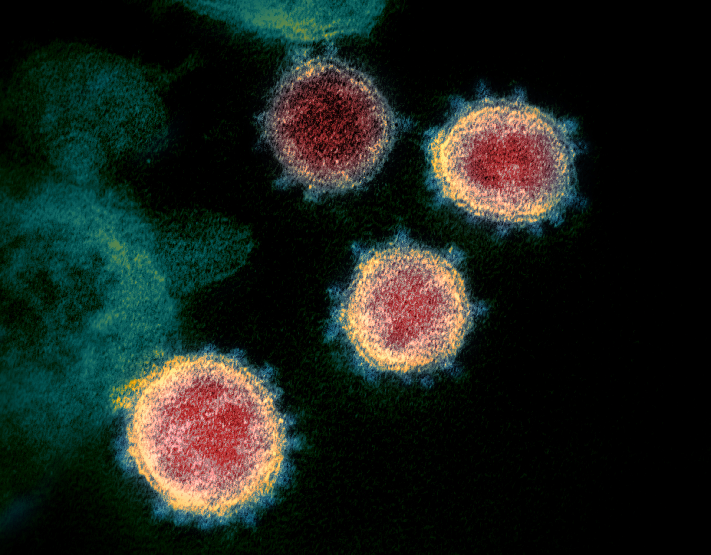
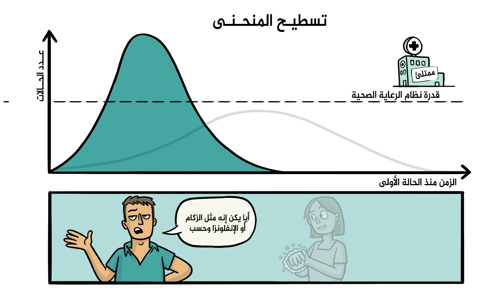
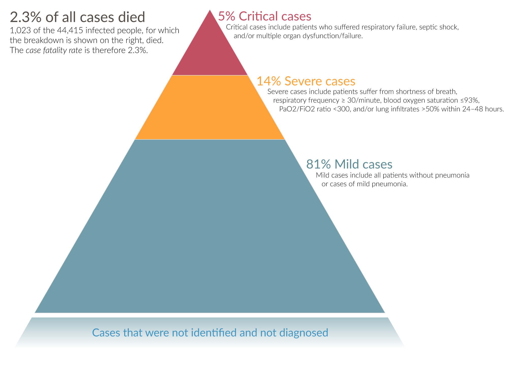
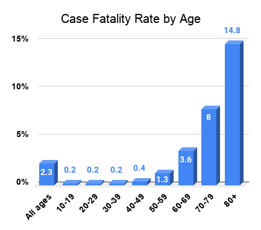

COVID-19
Corona virus disease in 2019 ( in English : Coronavirus DISEASE 2019 ), or Kovid -19 (COVID-19) short, also known
as the disease of acute respiratory infection associated with the emerging Corona 2019 , is a respiratory
disease Infectious animal origin, caused by a virus Corona 2 associated with respiratory syndrome Severe Acute
Respiratory Syndrome (SARS-CoV-2). This virus is very close to the SARS virus . The new virus was first detected
in the Chinese city of Wuhan in 2019, and has since spread around the world, causing the global coronavirus
pandemic . Since the beginning of the pandemic until today, more than 194,890,998 million cases of coronavirus
have been reported in all countries of the world, resulting in more than 4,171,501 million deaths . ratio of the
number of deaths to the number of diagnosed injuries is estimated at 3.4%, but it varies according to age and
the presence of other diseases.
Common symptoms of the disease include fever , cough , and shortness of breath , while muscle pain, sputum
production, and sore throat are not common. While most infections follow a benign, asymptomatic course, a number
of them progress to more serious forms such as severe pneumonia and multiple organ dysfunction. While the
majority of infected cases have mild symptoms, people with acute respiratory distress syndrome (ARDS) may
experience organ failure , septic shock , and blood clots.. The time between exposure to the virus and the onset
of symptoms ranges from two to 14 days, with an average of five days. Long-term damage to organs (particularly
the lungs and heart) has been observed, and there is concern about a large number of patients who have recovered
from the acute phase of the disease but still have a range of symptoms - including extreme fatigue, memory loss
and other cognitive problems, mild fever and weakness Muscles, shortness of breath, and other symptoms - for
several months after recovery.
The virus usually spreads between people during close contact, often through small droplets of dropletsProduced
by coughing, sneezing and speaking. These droplets usually fall to the ground or to surfaces rather than
traveling through the air over long distances. In less common cases, some people may become ill by touching
contaminated surfaces and then touching their face. The virus is most contagious during the first three days
after symptoms appear, although infection can occur before these symptoms appear and from people who do not show
symptoms of the disease. In addition, the use of a face covering is recommended for those who suspect they have
the virus and those who care for them. The recommendations for covering the face that people use are in conflict
with some authorities recommending them, some against them, and others advising them to use it. There is limited
evidence for or against the use of masks (medical or other) by healthy individuals in our community. The
infection is usually transmitted from one person to another through respiratory droplets resulting from coughing
or sneezing . The time between exposure to the virus and the onset of symptoms ranges from two to 14 days, with
an average of five days. The standard diagnostic method is to perform a smear (PCR) taken from the nasopharynx
or from the throat . The infection can also be diagnosed by combining symptoms and risk factors with a CT scan
of the chest that shows signs of pneumonia.
Measures to prevent infection include frequent hand washing , social distancing (maintaining adequate distance
between individuals) and avoiding touching the face. Masks are recommended for those suspected of carrying the
virus and for people caring for them, while the general public is not. For now, the Centers for Disease Control
and Prevention (CDC) and the World Health Organization ( WHO) recommendNow the general public wears masks in
public places, (although both organizations reported the exact opposite at the start of the epidemic). This
change may have confused the general public about the usefulness of masks. But health experts say the evidence
is becoming clear that masks can help prevent a pandemic and that the more people wearing masks, the better.
Masks should not be worn by children under the age of two (or up to five years), anyone who has difficulty
breathing, or anyone who is incapable or unable to remove the mask without assistance and in some cases other
special.
There is now a vaccine for the Corona virus, most notably the Oxford vaccine, AstraZeneca, the Pfizer-Biontech
vaccine and Sinopharm.
The World Health Organization has declared the 2019-20 coronavirus outbreak a global pandemic and a public
health emergency of international concern. Evidence of local spread of the disease was found in the six WHO
regions.
. Terminology
On February 11, 2020 , the World Health Organization announced that COVID-19 is the official name for the
disease.
The Director-General of the World Health Organization, Tedros Adhanom Ghebreyesus, indicated that the syllable
“ku”
refers to “corona”, the syllable “V” refers to “virus” and the syllable “D” means disease, and the number 19
refers
to the year, as it was announced The new outbreak was officially announced on December 31, 2019. Tedros stated
that
the purpose of choosing the name was to avoid associating the disease with a specific geographic region (i.e.,
China), a species of animal or a group of people, in line with international recommendations aimed at naming
diseases more appropriately. Prevents incitement to social stigma .
While the disease is called COVID-19, the World Health Organization calls the virus responsible for the disease
as
severe acute respiratory syndrome coronavirus 2 (SARS-CoV-2). Previously, the virus was called the 2019 novel
coronavirus. The World Health Organization also uses the designation "Covid-19 virus" and "the virus responsible
for
COVID-19" in public discourse.
. Symptoms and Signs
A recent study found that symptoms come in groups, and accordingly there are 6 types of Covid-19 disease caused
by infection with the Corona virus.
Those infected with the two diseases may be asymptomatic, or develop flu-like symptoms such as fever, cough and
shortness of breath. Less common are diarrhea and upper respiratory symptoms such as sneezing and runny nose.
Cases can progress to pneumonia or multiple organ dysfunction in risk groups.
Fever is the most common symptom, although some elderly people and those with other health problems develop a
fever later in the course of the illness. In one study, 44% of people developed a fever while 89% continued to
have a fever at some point while they were hospitalized. The absence of a fever does not prove that the person
is free from the disease.
Other common symptoms include coughing, loss of appetite, fatigue, shortness of breath, phlegm, and muscle and
joint pain. Symptoms of varying degrees such as nausea, vomiting and diarrhea were observed. Less common
symptoms include sneezing, a runny nose, or a sore throat. Some cases in China initially had only chest
tightness and palpitations. And then it may lead to a weak sense of smell or disturbances in taste. Only 30% of
confirmed cases experienced anosmia in South Korea.
As is common with disease, there is a delay between when a person is first infected and when symptoms appear.
This is called the incubation period. The incubation period for coronavirus is usually five to six days and may
range from two to 14 days, although 97.5% of infected people develop symptoms within 11.5 days of infection.
| Display |
incidence rate |
| Fever |
87.9% |
| Dry Cough |
67.7% |
| General Fatigue |
38.1% |
| Sputum Production |
33.4% |
| Hard Breathing |
18.6% |
| Muscle or Joint Pain |
14.8% |
| Sore Throat |
13.9% |
| Headache |
13.6% |
| Lugs |
11.4% |
| Nausea and Vomiting |
5.0% |
| Diarrhea |
3.7% |
| Hemoptysis |
0.9% |
| Conjunctival Hyperemia |
0.8% |
The incubation period ranges from two days to two weeks, with an average of five to six days according to the
World Health Organization . The approximate time from the onset of symptoms to the onset of clinical improvement
in mild cases of the disease is 2 weeks, and up to 3-6 weeks in severe or critical cases. Preliminary evidence
indicates that the time between the onset of symptoms and the development of the severe form of the
disease—which includes hypoxia—is approximately one week. The time between the onset of symptoms and death in
victims of the disease ranges from two to eight weeks.
A study in China found that computed tomography (CT) showed blurred glass infiltrates in 56% of cases, but 18%
of them showed no radiographic signs. 5% were admitted to intensive care units, 2.3% required mechanical
respiratory support and 1.4% died. The peripheral and bilateral coated glass mark is the most qualitative
finding on a CT scan. Condensation, linear infiltrates, and an inverse corona sign are other radiographic
features of the disease.
Initially, the lesions are limited to one lung, but as the disease spreads, signs begin to appear in the lungs
in 88% of the “late patients” participating in the statistical study (patients whose symptoms were separated by
a CT scan by 6 to 12 days .
It has also been observed that children have mild symptoms as compared to adults.
In March 2020, loss of smell was found to be a common symptom of COVID-19 , although perhaps not as common as
initially reported. Impaired sense of smell and taste disturbances have also been reported .
A few cases do not show any noticeable symptoms. These asymptomatic cases are often not tested, and their role
in transmission is not yet fully known; However, preliminary evidence suggests that it may contribute to disease
spread. percentage of infected people who do not show clear symptoms until March 2020, when the Korean Centers
for Disease Control and Prevention (KCDC) reported that 20% of confirmed cases remained asymptomatic during
their stay in the hospital.
. Disease course and Complications
The disease can take three main pathways. First, it can pass as a mild illness similar to a common upper
respiratory infection. The second possibility is pneumonia, that is, infection of the lower part of the
respiratory system. The third, and most dangerous, route is the rapid progression of the disease into acute
respiratory syndrome.
Advanced age is associated with an elevated Dimer-D value (an indicator of activation of the circulatory
coagulation reflex) above 1 µg/ml on admission, and a higher SOVA (a clinical scale that assesses the function
of a number of metabolic systems and organs such as the lungs, heart, liver, kidneys...) With the increased
likelihood of disease progression for the worse. In addition, elevated levels of interleukin-6, the highly
sensitive cardiac enzyme troponin I, lactate dehydrogenase, and decreased lymphocytes in the blood count are
associated with more severe forms of the disease. Complications of COVID-19 include sepsis and cardiac
complications (heart failure or arrhythmias), which are more likely to occur in people with pre-existing heart
conditions. In addition, a case of hypercoagulability was observed in 90% of patients with pneumonia caused by
the virus.
. The Reason

The disease is caused by the severe acute respiratory syndrome coronavirus type 2 (SARS-CoV-2),
previously
referred to as the 2019-nCoV (2019-nCoV). This virus is mainly spread between people through respiratory
droplets and droplets through coughing and sneezing . The virus can survive up to three days on plastic
and iron surfaces. SARS-CoV-2 virus survives for up to three days on surfaces or up to three hours in
aerosols. The virus was also found in faeces, but as of March 2020 it was not yet known whether
oral-anal transmission was possible; But in these cases, the risks are expected to be low.
The lungs are the organs most affected by COVID-19 because the virus reaches cells through
angiotensin-converting enzyme 2, which is abundant in the alveoli of the lungs. The virus uses a special
surface glycoprotein called "spike" to connect to the enzyme and enter the host cell. The density of
ACE2 enzyme in each tissue correlates with the severity of the disease in that tissue, and some have
suggested that reducing enzyme activity may be protective, but there is another opinion that increasing
the enzyme using angiotensin II receptor antagonist drugs can It is precautionary and these hypotheses
need to be tested. As the alveolar disease progresses, respiratory failure may develop and death may
follow.
The virus is believed to be of natural and zoonotic origin , through disseminated infection . The virus
first transmitted to humans in Wuhan , China, in November or December 2019, and the primary source of
infection became person-to-person by early January 2020. The first known infection occurred on November
17, 2019. By March 15, 2020 , 67,790 cases and 3,075 deaths from the virus had been reported in Hubei
Province; The case fatality rate (CFR) was 4.54%
. Diagnosis

The World Health Organization has published several protocols for COVID-19 testing that use reverse
transcriptase polymerase chain reaction (rRT-PCR). The test can be performed on samples from the respiratory
tract or blood. Results are generally seen within a few hours to days.
Chinese scientists have isolated a strain of the coronavirus and then published the genetic sequence so that
laboratories around the world can independently develop polymerase chain reaction (PCR) tests to detect
infection with the virus.
As of February 26, 2020, scientists have not had antibody tests or tests ready for the point of care, but
efforts are underway to develop them.
The diagnostic recommendations issued by Zhong'an Hospital of Wuhan University suggested methods for
diagnosing infection based on clinical signs and epidemiological severity. These criteria included
identifying persons who had at least two of the following symptoms in addition to a history of travel to
Wuhan or contact with an infected person: fever, radiographic signs of pneumonia, stable or decreased white
blood cell count, or decreased lymphocyte count. A study published by a team from Tongji Hospital in Wuhan
on February 26, 2020, showed that CT has a higher sensitivity (98%) than PCR (71%). False negative results
can be caused by a failed lab kit, or problems with sampling or testing. False positive results are
relatively rare.
. Prevention

Since a vaccine for SARS-CoV- 2 is not expected to be available before at least 2021, management of the
COVID-19
pandemic relies on reducing the pandemic peak, also known as “flattening the pandemic curve” through several
measures aimed at Reducing the rate of emergence of new infections. Slowing the spread of infection reduces
the
likelihood of health services being flooded, which allows those affected to receive better health care, and
provides more time to develop a specific vaccine or treatment.
The preventive measures recommended to reduce the possibility of infection in endemic areas are similar to
the
prevention measures published for other coronaviruses: stay at home, avoid travel and social activities,
wash
your hands often with soap and hot water, practice good respiratory hygiene, and avoid touching your eyes,
nose
or mouth with unwashed hands. Social distancing aims to reduce the contact of infected people with large
groups
by closing schools and workplaces, restricting travel and canceling large gatherings.
According to the World Health Organization , it is recommended to use a medical mask if a person is coughing
or
sneezing, or when that person is caring for an injured or suspected person. Currently, both the Centers for
Disease Control and Prevention (CDC) and the World Health Organization ( WHO) recommend masks for the
general
public in public places, (although both organizations reported just the opposite at the start of the
epidemic).
This change may have confused the general public about the usefulness of masks. But health experts say the
evidence is becoming clear that masks can help prevent the spread of a pandemic and that the more people
wearing
masks, the better. It is important to follow the instructions for wearing masks, not neglecting them,
cleaning
them properly, and washing hands before and after taking them off.
In general, the World Health Organization advises that children under the age of two (or even five) should
not
be forced to wear masks. This also applies to anyone who has difficulty breathing, or anyone who is
incapacitated or unable to remove the mask on their own without assistance, as well as for some other
special
cases. should be noted that wearing a mask is not a substitute for social distancing . Masks should continue
to
be worn and at least 6 feet of distance apart, especially in public and indoor areas around people who do
not
live together.
In order to prevent the spread of the virus, the Center for Epidemiology and Prevention in the United States
of
America advises that infected individuals remain at home unless medical assistance is sought, contact before
going to a health care provider, wear a face mask when exposed to an infected person or a place where
infection
is suspected to be spreading, and cover Mouth with a tissue when coughing and sneezing, washing hands
regularly
with soap and water, and avoiding sharing personal household items.
The Centers for Disease Control and Prevention advises people to wash their hands for at least 20 seconds,
especially after going to the bathroom or when hands look dirty, before eating and after blowing the nose,
coughing or sneezing. The center also recommends using an alcohol-based hand sanitizer with an alcohol
concentration of at least 60%, only if there is not enough soap and water. The World Health Organization
advises
against touching the eyes, nose or mouth with unwashed hands. You should also avoid spitting in public.
. Warning

A large number of COVID-19 victims had pre-existing health problems, such as high blood pressure , diabetes
and cardiovascular disease. In a study of some early cases, the median time between symptom onset and death
was estimated at two weeks, but ranged completely from six to forty-one days. In a study conducted by the
National Health Commission of China , the death rate for males was 2.8% compared to 1.7% for females. For
patients under the age of fifty, the probability of death does not exceed 0.5%, while it reaches more than
8% in patients over the age of seventy. The availability of medical supplies and the socio-economic
conditions of the area may play a role in determining mortality rates.
Histopathological examination of pulmonary samples taken from patients postmortem showed diffuse alveolar
damage and fibromucosal infiltrates in both lungs. The cytopathic effects appeared in the lung cells. In
general, the general picture of the lung samples showed a similar appearance to acute respiratory distress
syndrome.
Scientists do not yet know whether previous infection with the virus provides long-term immunity to the
infected person after recovering from the disease. The acquisition of immunity is considered likely based on
the typical behavior of other coronaviruses, but some recoveries from COVID-19 subsequently reported
positive laboratory results for the virus after recovery. is not yet known whether this positivity is the
result of re-infection, recurrence of previous disease, or an error in laboratory analysis.
The Hong Kong Hospital Administration found a 20% to 30% reduction in total lung capacity in two or three
out of twelve people who recovered. Those recovering complain of shortness of breath when walking too fast.
Scans of the lungs carried out on nine patients at Princess Margaret Hospital showed that they had suffered
organ damage.
In a study of children in China among laboratory-confirmed or clinically suspected cases of COVID-19,
children of all ages were found to be susceptible to the disease without any sex differences. Among all
children, 4.4% of the cases were asymptomatic, 50.9% of the infected had mild symptoms, 38.8% had moderate
symptoms, 5.2% of the cases were severe, and the critical cases represented 0.6%. One death occurred in a
fourteen-year-old child in the studied human group.

| Age |
80+ |
70-79 |
60-69 |
50-59 |
40-49 |
30-39 |
20-29 |
10-19 |
0-9 |
| China as of February 11 |
14.8 |
8.0 |
3.6 |
1.3 |
0.4 |
0.2 |
0.2 |
0.2 |
0.0 |
| Italy as of March 16 |
19.2 |
11.8 |
3.2 |
1.0 |
0.3 |
0.2 |
0.0 |
0.0 |
0.0 |
| South Korea as of March 17 |
10.2 |
5.4 |
1.6 |
0.4 |
0.1 |
0.1 |
0.0 |
0.0 |
0.0 |